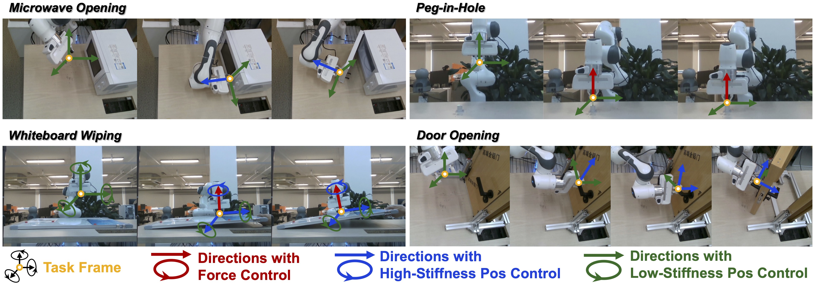
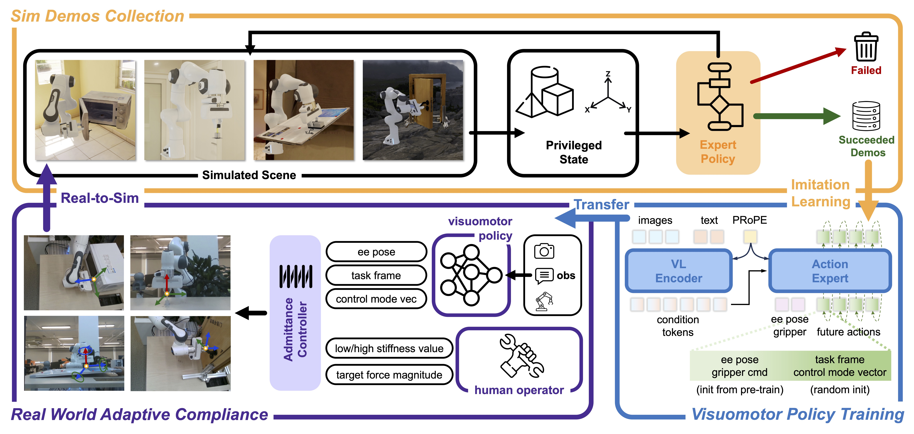

Contact-rich manipulation requires robots to regulate both motion and interaction forces, yet achieving adaptive compliance remains a fundamental challenge. Learning from real-world data is costly and risky, while simulation-based approaches struggle with the sim-to-real gap in contact dynamics; existing sim-to-real methods either require real-world adaptation or sacrifice adaptive compliance by relying on isotropic compliant controllers. Our key insight is that force regulation decomposes into a time-varying but simulation-transferable directional component and a dynamics-sensitive but manually tunable magnitude component. We instantiate this directional component as two policy outputs, a task frame and a control mode vector, predicted by a visuomotor policy adapted from a pre-trained VLA model and trained via imitation learning on automatically generated simulation demonstrations. At deployment, an admittance controller integrates these predictions with human-specified stiffness and target wrench values to realize adaptive compliance. Our approach achieves adaptive compliance using only simulation data and can benefit from large-scale VLA pre-training. Extensive real-world experiments on four contact-rich tasks, microwave opening, peg-in-hole insertion, whiteboard wiping, and door opening, demonstrate strong task success rates and robustness to external disturbances.


Real objects are scanned into simulated scenes, where a privileged expert generates demonstrations and retains only successful rollouts. A visuomotor policy built on a pretrained VLA model jointly predicts end-effector poses, task frame orientations, and control mode vectors; new output heads are randomly initialized while original weights are inherited. At deployment, an admittance controller combines policy predictions with operator-tuned stiffness and force setpoints for adaptive compliance.
We leverage privileged states in simulation to build an expert policy. The expert policy switches behavior based on the contact state: During free motion, it simply tracks object-centric key poses. During contact interaction, it executes task-specific motion rules designed to satisfy contact constraints. This allows us to automatically generate large-scale, high-quality demonstrations across diverse tasks.
@inproceedings{tdc,
title={TDC: Sim-to-Real Transferable Directional Compliance for Contact-Rich Manipulation},
author={Yifei Yang and Anzhe Chen and Zhenjie Zhu and Kechun Xu and Yunxuan Mao and Yufei Wei and Lu Chen and Rong Xiong and Yue Wang},
booktitle={10th Annual Conference on Robot Learning (CoRL)},
year={2026}
}